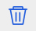

- {{portfolio.user_name}}

RANKING
{{portfolio.rank}}
Beat {{parseFloat(portfolio.succe_rate||0).toFixed(2)}}% of All the Users
ROI : {{portfolio.entire_history}}(updated in 24 hours)
Daily Volatility : {{portfolio.volatility}}
Max Drawdown : {{portfolio.max_drawdown}}
Max Drawdown:The Max Drawdown Duration is the worst (the maximum / longest) amount of time an investment has seen between peaks. Link:
https://en.wikipedia.org/wiki/Drawdown_(economics)
?
- 
- {{portfolio.read_num}}

Quantitative Analysis
- {{tab.name}}
Loading...
Based on your risk tolerance characteristics, the portfolio optimization that the COIN AI system suggests to you is:
Ann Return:{{parseFloat(optimization.Frontier[range][1]*optimization.AnnFactor*100).toFixed(2)}}%
Low return & Low risk
High return & High risk
| Statistic | Entire History | {{rollResult[0]}} |
|---|---|---|
| {{result[0]}} | {{result[1]}} | {{roll[index][result[0]]}} |